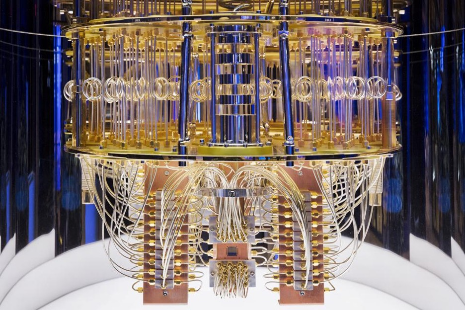

Quantum Computing
Quantum Mechanics
Classical physics describes motion in nature at any size greater than that of atomic and
subatomic particles i.e. at an ordinary or macroscopic scale.
Classical physics predates the discovery of quantum mechanics.
Quantum mechanics describes motion in nature at the atomic and subatomic scale (“Quantum Mechanics”).
In contrast to classical physics, in quantum mechanics, “energy, momentum, angular momentum,
and other quantities of a bound system” are measured by discrete values, or “distinct,
separated values,” rather than continuous values (“Quantum Mechanics”, “Discrete Math”).
In addition, the difference between classical physics and quantum mechanics are that quantum mechanics
includes wave-particle duality as well as Heisenberg’s uncertainty principle. Wave-particle duality
describes the phenomenon of objects behaving both as particles as well as waves. The uncertainty
principle describes the inability to predict the momentum and position of a particle from its
initial conditions (“Uncertainty Principle”).
Quantum mechanics involves the calculations of the “properties and behavior of physical systems”
but at a microscopic scale (“Quantum Mechanics”). This can include molecules, atoms, and/or subatomic
particles. The laws of quantum mechanics can also apply to complex molecules comprised of thousands
of atoms. Applications to humans includes queries into philosophical curiosities, for example,
“Wigner’s Friend”.
In quantum mechanics there is no certainty in predictions-—merely probabilities. Probabilities are illustrated
by the Born Rule created by Max Born, wherein the math for a probability amplitude is the square root of the
absolute value of a complex number.
There is no telling where an electron will be found. The uncertainty principle states that regardless of how
carefully an experiment is prepared or a quantum particle arranged, it is impossible to measure the prediction
of a quantum particle’s position and momentum.
Quantum interference: Demonstrated by the double slit experiment, light can be both waves and particles.
Prior to the experiment, it was believed that light was either waves or particles (“Double Slit Experiment”).
Quantum tunnelling:A particle traverses a potential barrier instead of being impeded by it, “even if
its kinetic energy is smaller than the maximum of the potential” (“Quantum Mechanics”). In classical mechanics,
the particle would be trapped. Quantum tunnelling allows for radioactive decay and nuclear fusion in stars,
but also has applications that include scanning tunnelling microscopy, which is a microscope that creates images
of surfaces at the atomic scale (“Scanning Tunnelling Microscopy”).
Quantum entanglement: Quantum states of particles affect the state of each other, even from a large
distance. Measurements of physical properties, for example, “position, momentum, spin, polarization” are
affected and even align with each other. Quantum entanglement leads to quantum pseudo-telepathy,
which is depicted by Bayesian games (a game where the players have “incomplete information” regarding
the other players) where the players who have access to a “share physical system in an entangled quantum
state” result in higher payoffs (“Quantum Pseudo-telepathy”, “Bayesian Games”).
Quantum key distribution (OKD): The most prominent quantum cryptographic task wherein two parties
share a “random secret key” that only they know. This is used to encrypt and decrypt messages
(“Quantum Key Distribution”).
Superdense coding: In quantum information theory the quantum communication protocol is to transmit
2 classical bits of information, whether it is 00, 01, 10, or 11, from sender Alice to receiver Bob
with 1 qubit if Alice and Bob are in pre-shared entangled states. This is the opposite of quantum
teleportation which sends 1 qubit via 2 classical bits in a preshared Bell pair.
Test for “hidden variables” are even “more fundamental than” those described by quantum theory.
That is to say, quantum theory is an “incomplete description of nature” and there may be a way
to accurately predict a measurement’s outcome. Meanwhile, quantum mechanics is nondeterministic
and does not predict outcomes with certainty.
In order to fully understand quantum mechanics, one must be able to: Manipulate complex numbers
Understand linear algebra, differential equations, group theory, and more (“Quantum Mechanics”).
Next View the History of Quantum Computing